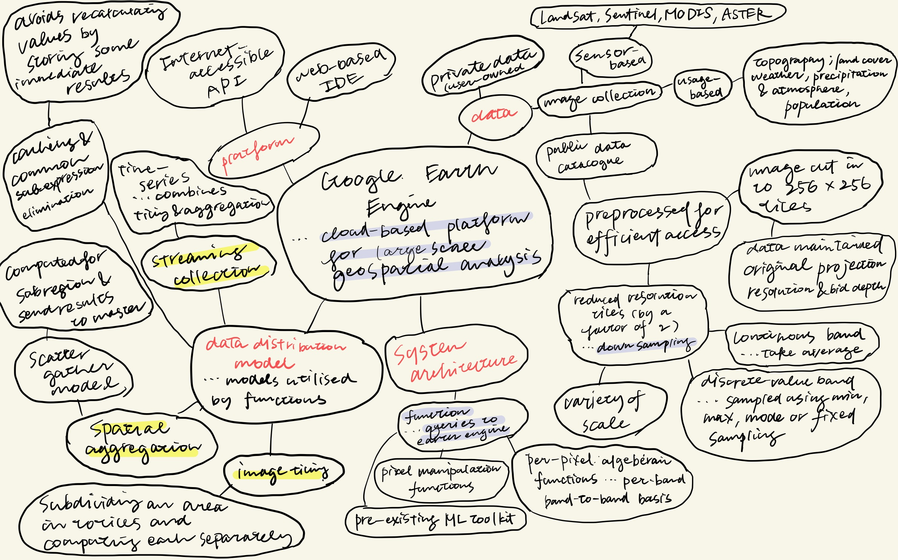
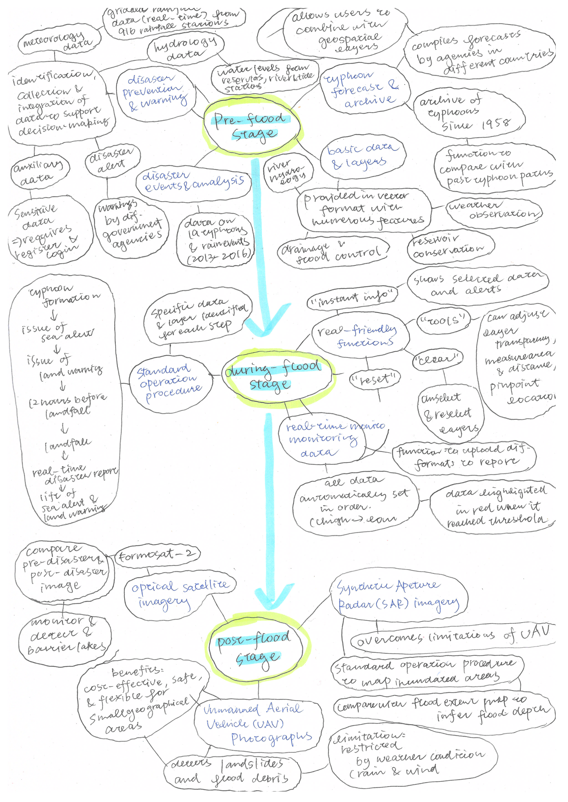

Week 5
Summary
This week we went through the following content in the lecture:
The set up of Google Earth Engine (GEE)
Terms specific to GEE
Relating spatial data formats to GEE
Explanation of the client and server side
Scale (resolution)
Projections
In the practical, we saw the different types of data that could be used in Google Earth Engine, and what kinds of preparation, processing, and analysis could be conducted.
As a summary, here I provide a mind-map of the article by Gorelick et al. (2017). According to Google Scholar, this article has been cited in 6963 pieces of academic work, which I think demonstrates the strong influence of GEE in the field of Remote Sensing in terms of the changing the workflow.

Application
For the application of GEE, I will introduce the review article by Liu et al. (2018), which introduces the Flood Prevention and Emergency and Response System (FPERS) in Taiwan. It is a paper that presents how the usage of Google Earth Engine may be beneficial for policies. The attached figure is a flow chart of how the FPERS supports decision making in the pre-flood, during-flood and post-flood stage.

The merits of using GEE for this FPERS maybe outlined as below (Liu et al. 2018):
The ability to prepare and update images for analysis for analysis and visualisation
- Cost effective for accessing up to date data (Sentinel-2 data for every five days)
Incorporation of the global topological data, allowing for 3D display of the data
However, it is quite important that they also consider the limitations in GEE for the usage of this system. Liu et al. (2018) state that the GEE lacks the flexibility for managing and searching an expansive database with its increasing number of data, requiring the knowledge of the data the user wants to use and selecting the data based on conditions. Moreover, due to the depreciation of Google Earth API, the services were downgraded to Google Maps API, only allowing for 2D Display. This highlights the challenges which may arise when relying on a single commercial platform.
Summary
The amount of attention given to Google Earth Engine and its applications in different areas has been interesting. In terms of the technicality, I think the computational easiness which has been addressed throughout the lecture and in the works of Gorelick et al. (2017) of Google Earth Engine is a great advantage, after using RStudio for some of the analysis in previous weeks. The range of things that is made possible with GEE in FPERS is quite astonishing. However, obviously GEE is not perfect for every single application, so I think it is important to develop an understanding what can be done well and what cannot. Moreover, in terms of accessibility, the paper on FPERS by Liu et al. (2018) was informing about the limitations of GEE and how it is not perhaps being accessible for everyone as I thought and how it promotes it is. The point regarding the reliance on a single platform was quite interesting, and I would like to perhaps explore alternative platforms for analysis in the future.